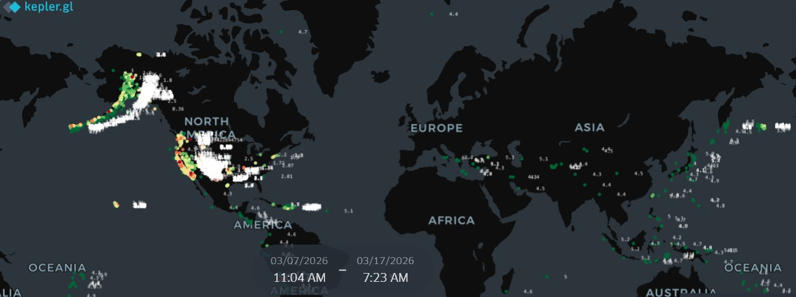

Kepler.gl
Kauno svarbios vietos
Kauno miesto svarbių objektų ir vietų žemėlapis.
Interaktyvi žemėlapių svetainė, skirta patogiai peržiūrėti ir analizuoti skirtingo pobūdžio geografinius duomenis. Svetainėje pateikiami tiek informaciniai, tiek praktiniam naudojimui pritaikyti žemėlapiai – nuo svarbių vietų ir verslui aktualios informacijos Kaune iki nelaimingų atsitikimų bei pasaulinių gamtinių reiškinių apžvalgos. Lankytojai gali lengvai naršyti tarp skirtingų temų, peržiūrėti pranešimus, registruoti objektus bei naudotis interaktyviomis funkcijomis. Pagrindiniame puslapyje visi žemėlapiai pateikiami aiškiose peržiūros kortelėse, todėl norimą informaciją galima pasiekti greitai ir patogiai.
Ši svetainė sukurta mokymosi tikslais. Joje vienoje vietoje pateikiami ankstesnių praktinių darbų metu sukurti interaktyvūs žemėlapiai.
Pagrindiniame puslapyje žemėlapiai pateikiami moderniuose peržiūros languose su vaizdais ir trumpais aprašymais, leidžiančiais greitai susipažinti su turiniu. Paspaudus pasirinktą peržiūrą ar atidarymo mygtuką, atveriamas atskiras puslapis su interaktyviu žemėlapiu ir detalesne informacija.
Pasirinkite žemėlapį ir atidarykite jį atskirame puslapyje.
Kauno miesto svarbių objektų ir vietų žemėlapis.

Globalus žemės drebėjimų pasiskirstymo žemėlapis.

Verslo objektams ir teritorijoms analizuoti skirtas žemėlapis.

Nelaimingų atsitikimų duomenų vizualizacija Kaune.

Pirmasis teminis Geoportal pagrindu sukurtas žemėlapis.

Antrasis teminis Geoportal žemėlapis.

Užregistruotų pranešimų ir objektų peržiūros žemėlapis.

Taškinio objekto registravimui skirtas žemėlapis.

Plotinio objekto registravimui skirtas žemėlapis.
Kontaktų puslapyje pateikiama informacija apie svetainės kūrėją ir Google Forms kontaktų forma.
Susisiekti